Crea el administrador de un consultorio y fija sus reglas de funcionamiento. Es la única página habilitada para hacerlo.
La dirección del servidor del consultorio. Queda guardada en este navegador.
La cuenta tiene que estar en la lista de la instalación. La sesión dura treinta minutos y no se renueva.
| Administrador | Estado |
|---|
No se elige la contraseña. Le llega un mail para que elija la suya. Tu contraseña se vuelve a pedir acá porque un token robado no tiene que alcanzar.
Cómo funciona el turnero de esta instalación. Las que tienen candado el consultorio no las puede cambiar desde su panel. Las marcadas "solo consola" ni siquiera las ve.
Estado de las páginas, incidentes, gastos de Railway, clientes, tickets, notas y ajustes del control.
El token queda solo en esta pestaña y se borra al cerrarla.
Sin chequeos todavía
Uso y gasto del período, según el último chequeo.
Cada cliente es un sitio de sitios.json, con su contacto.
Issues del repositorio con la etiqueta ticket.
Relevamientos, análisis y notas por cliente, en la carpeta notas del repositorio.
Cuándo algo es un aviso o una falla, y a quién se avisa. Se guardan en sitios.json.
Instalaciones crea los administradores de cada turnero y fija sus reglas. Control mira todas las páginas, el gasto de Railway y el trabajo con cada cliente. Las capturas son de ejemplo.
Control lee y guarda todo en el repositorio privado control-datos, con un token de GitHub que solo ve ese repositorio.
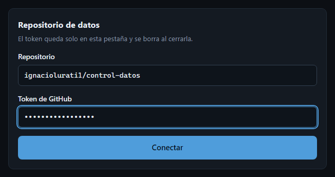
El token queda solo en esa pestaña del navegador. Al cerrarla se pega de nuevo, así que conviene tenerlo en el gestor de contraseñas.
Arriba de todo, el resumen dice si está todo en orden o qué anda mal, y cada problema tiene un Ver que lleva a donde se mira.
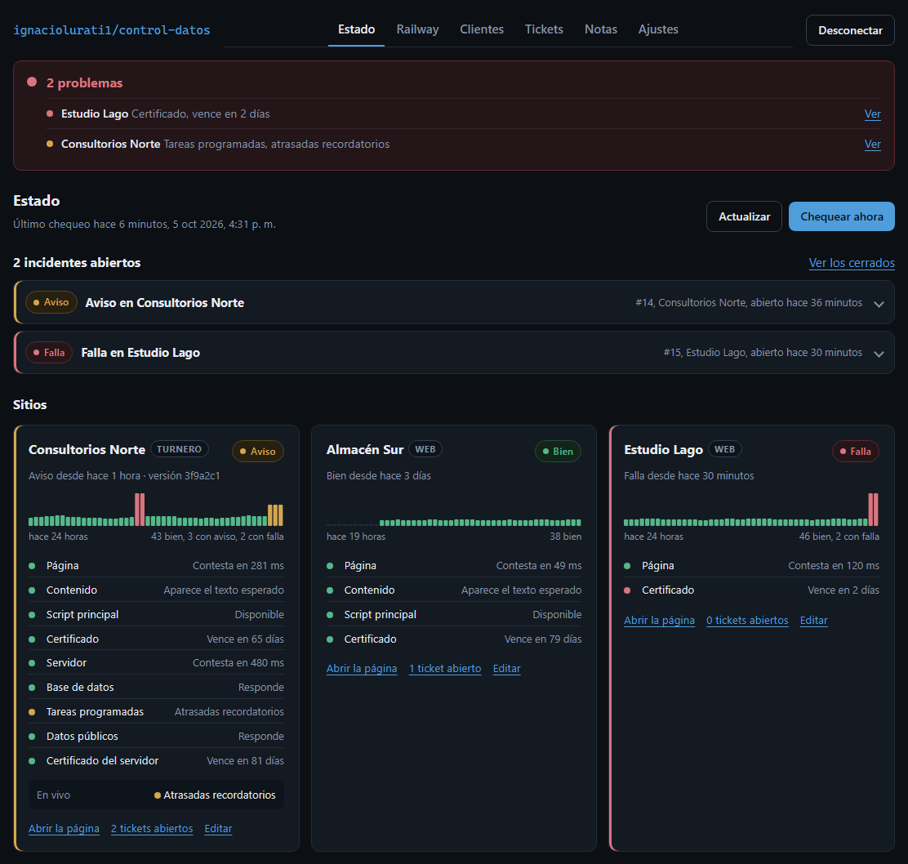
El chequeo corre solo cada media hora. Chequear ahora lo corre en el momento y muestra en qué paso va.
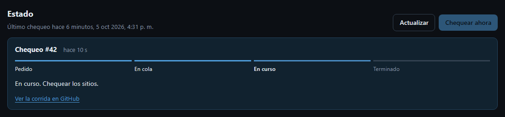
Los proyectos no se suman solos. Cada página que se quiere mirar se carga una vez.
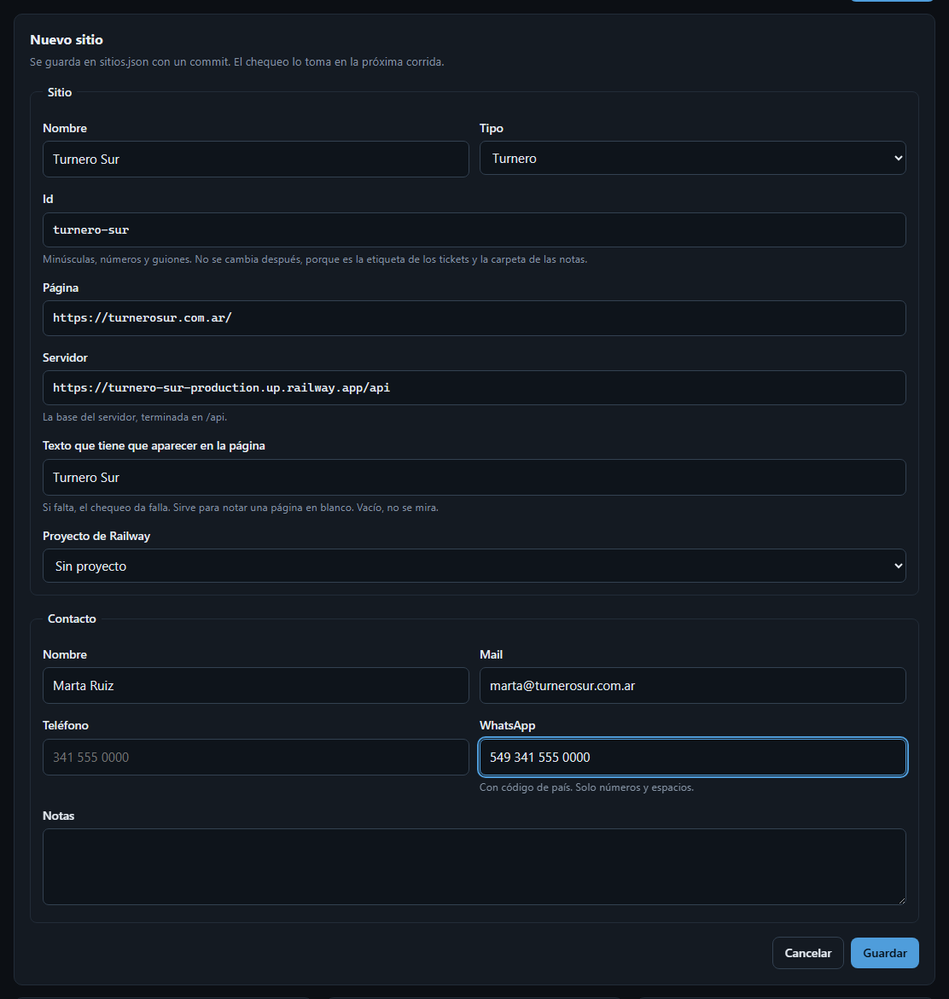
Entra en el próximo chequeo, o enseguida con Chequear ahora. Un proyecto de Railway que ningún sitio usa aparece en la vista Railway con Agregar como sitio, que abre el mismo formulario con el proyecto ya elegido.
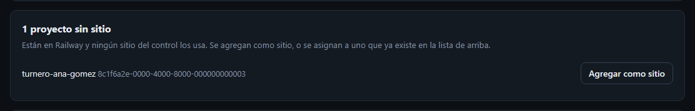
Un turnero nuevo necesita además, en las variables de su servidor en Railway, CONSOLE_ORIGIN con la dirección de esta consola sin la ruta, OWNER_EMAILS con las cuentas que pueden entrar a Instalaciones y su propia CONSOLE_JWT_SECRET.
Si el token de Railway es de un solo proyecto, el gasto del nuevo no se ve. Hace falta un token de cuenta, y en la vista Railway, Cómo se cambia tiene los pasos.
En Clientes, cada tarjeta tiene Editar. Ahí se cambian los datos del sitio y del contacto, y abajo está Borrar sitio, que pide confirmación. Nuevo ticket y Nueva nota abren con ese cliente ya elegido.
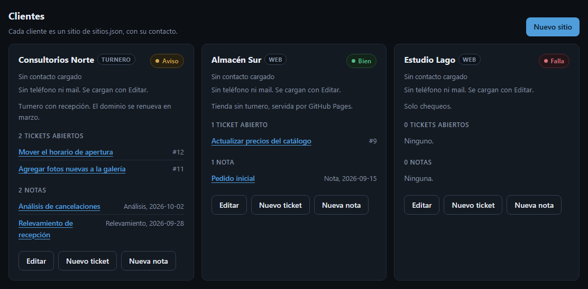
Cada cambio queda como un commit en control-datos. En Ajustes, Ver el historial muestra qué cambió y cuándo, por si hay que volver atrás.
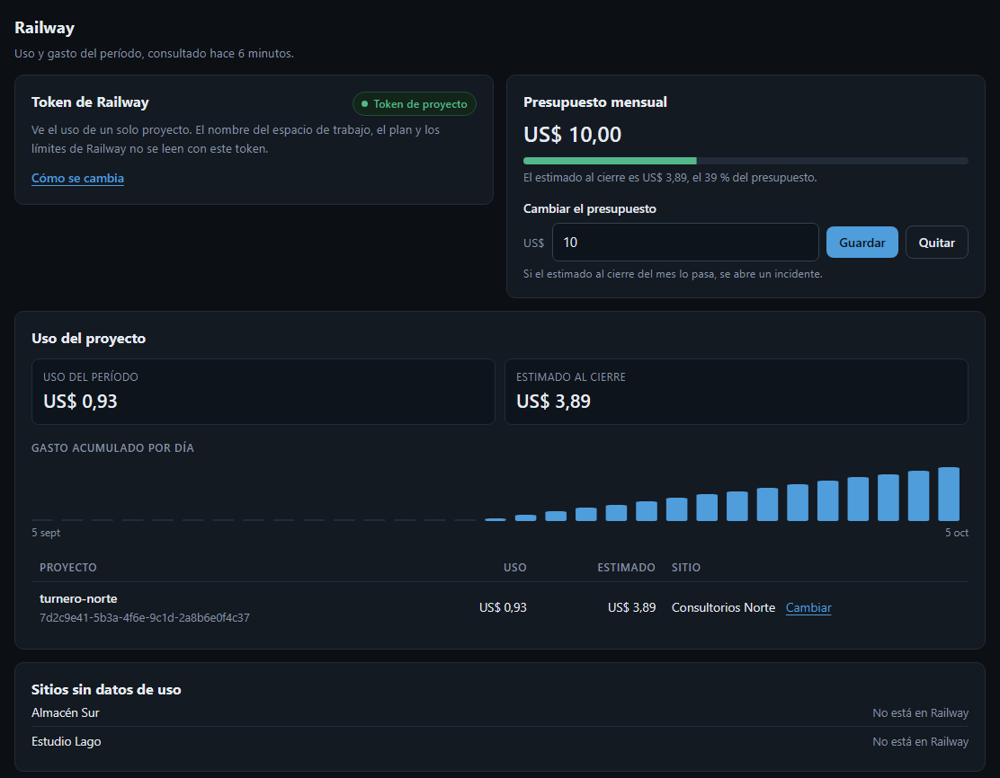
Los tickets son lo pendiente con cada cliente, con prioridad. Se crean, se comentan, se cierran y se reabren desde acá, y se filtran por cliente, estado o prioridad.
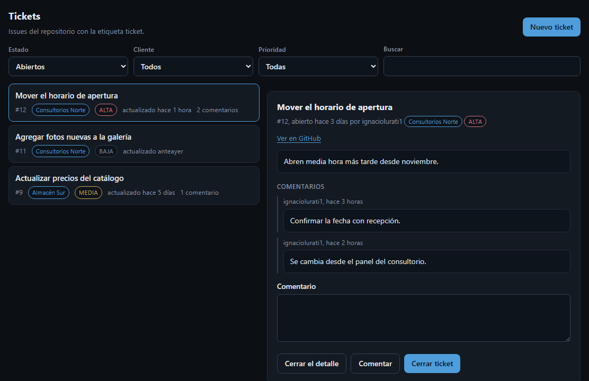
Las notas guardan relevamientos, análisis y notas sueltas de cada cliente. Nueva nota, elegir cliente y tipo, escribir y Guardar.
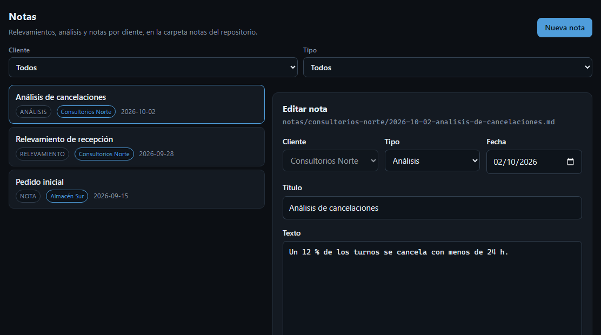
Cuándo una página lenta o un certificado por vencer pasa a aviso o a falla, y qué usuarios de GitHub reciben el mail de cada incidente. Al lado está lo que solo se hace en GitHub, con sus enlaces.
OWNER_EMAILS.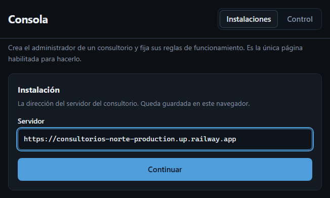
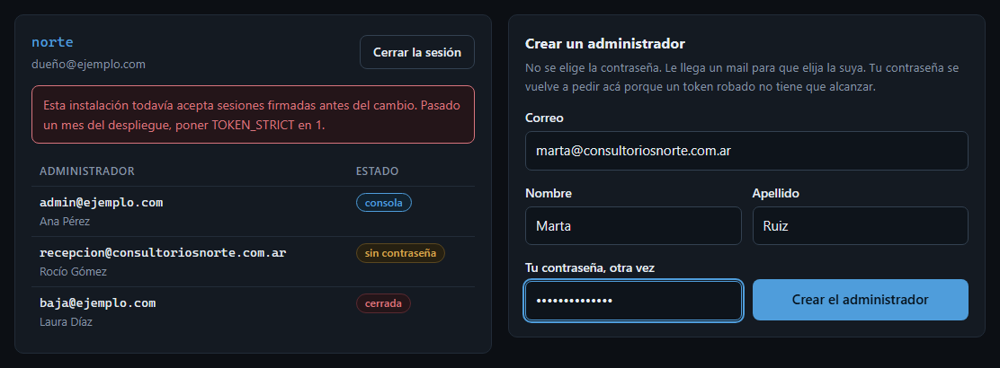
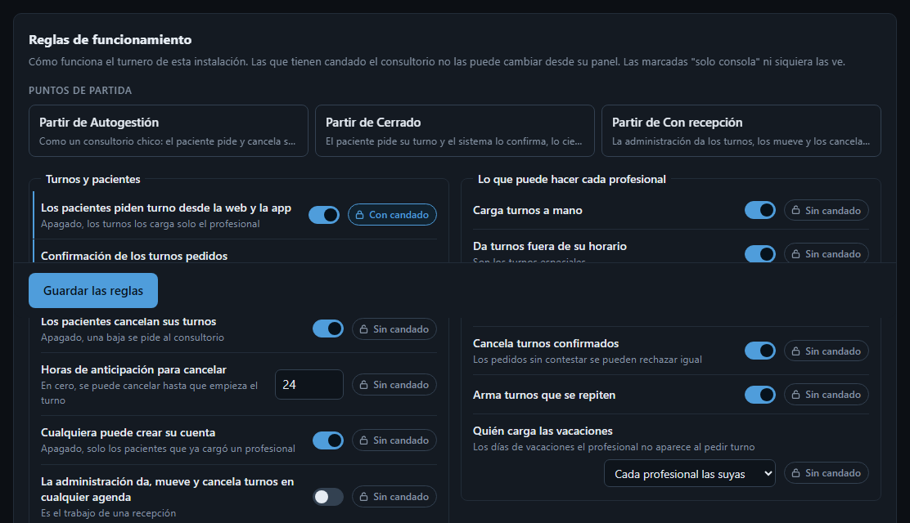